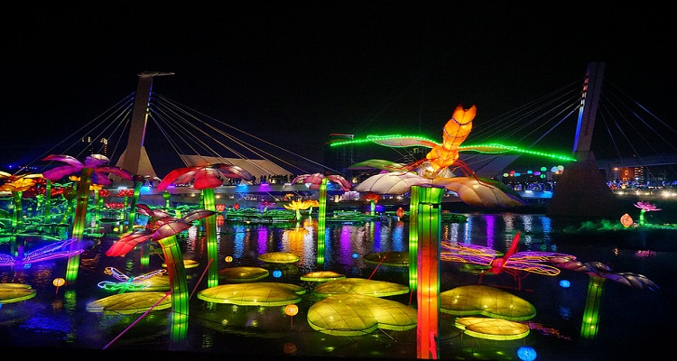
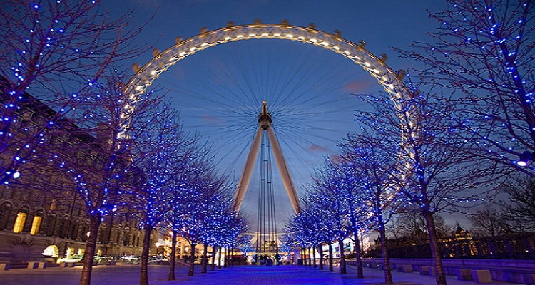

#元宵节灯会#
农历1月15日是元宵节，一般称为「小过年」，在众多节庆中，元宵节热闹的程度仅次于农历春节，是台湾最热闹的大型传统文化节庆。全国各地张灯结彩热闹地办理灯会庆元宵系列活动，台北灯节也已成为最受国际观光客喜爱的台北节庆。美国Discovery频道「世界最佳节庆（Fantastic Festivals of the World）」节目曾来台制作 “Lantern Celebrations” Taiwan 专辑，极力推荐台湾灯会庆元宵系列活动为全球最佳节庆活动。

图：台北灯节
#在美丽华百乐园乘坐摩天轮#
位于台北市、竖立在基隆河截弯取直的大弯段新生地之上的全新概念商业设施『美丽华百乐园』。美丽华百乐园最具特色的场景就是全台首创的百米摩天轮，结合娱乐、科技、艺术于一体，可以媲美日本「东京台场摩天轮」，成为情侣约会的首选景点，夜间绽放光彩绚丽的灯光表演，是台北夜空最美丽的宝石。加上还有浪漫梦幻的音乐旋转木马游乐设施，让空气中更充满温馨欢乐感。
电话：02-2175-3456
地址：台北市中山区敬业三路20号
大众运输：搭高铁或台铁至台北站下-转搭台北捷运至剑南路站下。

图：美丽华百乐园
#游大稻埕旧城区#
18世纪末的大稻埕，因淡水港的开放后开始大放异彩，让大稻埕成为商贸繁荣、人文荟萃之地。大稻埕拥有华丽的巴洛克式建筑、传统的闽南平房、明亮的红砖洋楼，到处都有旧城的历史轨迹。在这历史悠久的古老街区中，拥有深厚历史传承的百年老铺与创意街区，打造出大稻埕新生活美学。
若想要一窥台北人文底蕴，您可以漫步在迪化街、或在慈圣宫前的小吃摊品味在地美食，踏入巷弄里逛逛各具风格的选物文创小店，坐在典雅怀古的街屋中喝杯咖啡享受悠闲时光，想体会台北传统生活，来台北绝对不能错过大稻埕！
位置：台北市大同区

图：大稻埕码头
#温泉泡汤趣#
「温泉」是大地赐予人类宝贵的礼物，自古以来即被人们作为养生与水疗的天然资源。北投温泉从日据时代便有盛名，深受喜爱泡汤的旅客千万不要错过。泡温泉对皮肤病、神经过敏、气喘、风湿等具有很好的疗效。